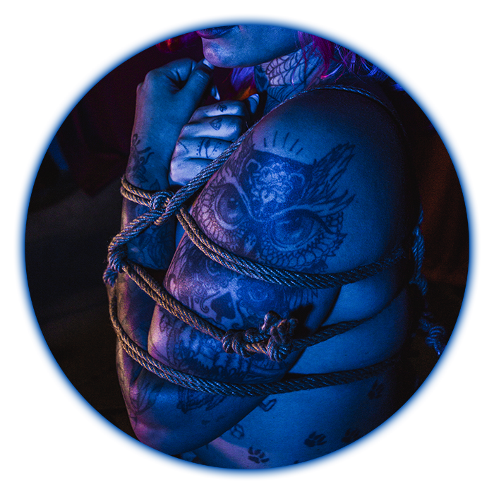
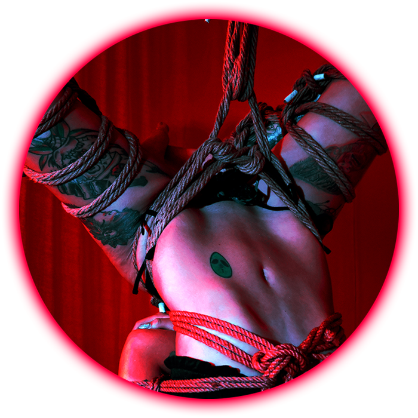
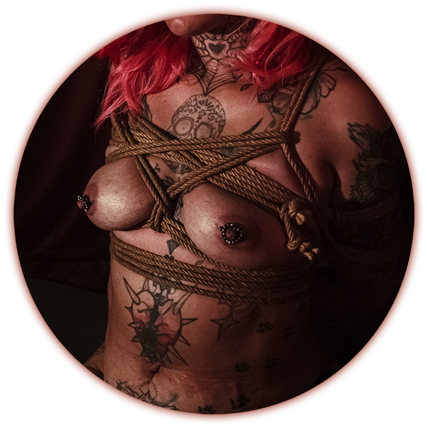

Enfoque formativo
El programa de formación en Shibari está diseñado para desarrollar habilidades de manera progresiva, respetando los tiempos de aprendizaje y priorizando siempre la seguridad, la comunicación y el consentimiento.

Fundamentos
- Introducción al uso de la cuerda
- Tipos de cuerda y mantenimiento
- Nudos básicos y control de tensión
- Postura y ergonomía

Seguridad y comunicación
- Principios de consentimiento informado
- Lectura corporal y señales de riesgo
- Comunicación entre rigger y modelo
- Protocolos básicos de seguridad

Estructuras básicas
- Ataduras de torso
- Ataduras de brazos y piernas
- Transiciones entre posiciones
- Control del ritmo y la tensión

Desarrollo progresivo
- Integración técnica y fluidez
- Construcción de secuencias
- Exploración estética y expresiva
- Práctica supervisada

 ← Volver al inicio
← Volver al inicio